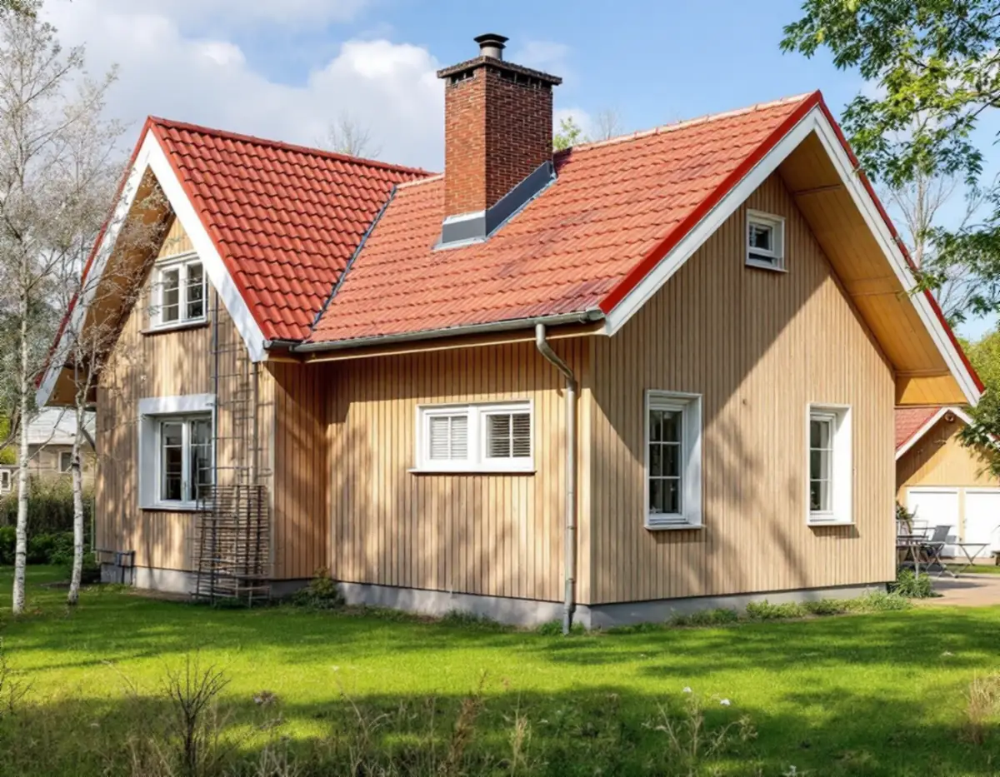
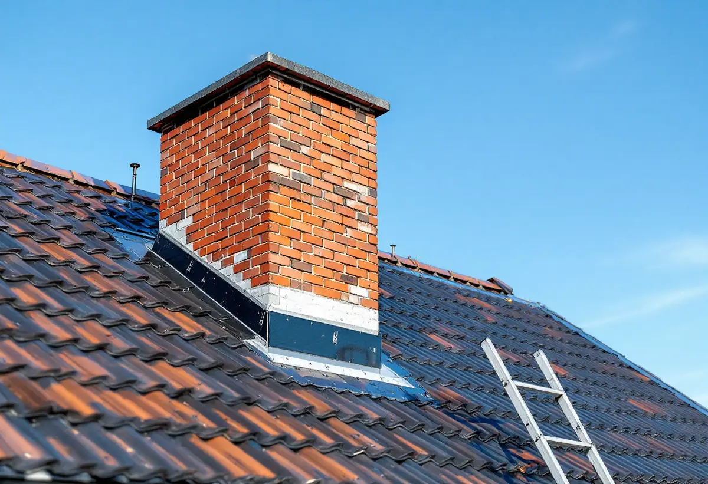

Ritningar
Husets sektion och fasader hämtas från bygglovsarkivet.
Vallentuna kommun svarar kort på frågan om nytt tak: för ett en- eller tvåbostadshus krävs inget bygglov. Men det finns undantag, och skorstenen har egna regler. Geal Entreprenad AB byter tak på villor och gårdar i hela Vallentuna och börjar med husets egna ritningar.

Ommålning, nytt tak eller nya fönster kräver inte bygglov för ett en- eller tvåbostadshus, skriver Vallentuna kommun. Ändringar ska ändå göras varsamt och anpassas till byggnadens värden. Bygglov krävs om fastigheten ligger inom ett kulturhistoriskt särskilt värdefullt område eller om byggnaden är kulturhistoriskt särskilt värdefull. Det krävs också om ändringen görs på en fasad eller ett tak mot allmän plats, men det gäller bara flerbostadshus.
Plan- och bygglagen räknar byte av taktäckningsmaterial som fasadändring, så frågan uppstår främst när materialet eller färgen ändras. Vi går igenom detaljplanen och husets historia vid platsbesöket, och behövs lov tar vi fram handlingarna.

Till en ansökan om bygglov för fasadändring vill kommunen ha en situationsplan baserad på tomtkartan med den berörda byggnaden ikryssad, fasadritningar i skala 1:100 på de berörda fasaderna, en redovisning av utvändiga material och kulörer med NCS-koder och en kontrollplan. Materialen kan anges på ansökningsblanketten eller på fasadritningarna.
Ritningarna ska ha information om vad de visar, skala och fastighetsbeteckning, alla mått i millimeter och norrpil på situationsplanen, och de ska lämnas in i en omgång och vara fackmannamässigt utförda. Äldre ritningar kan beställas om de finns i kommunens arkiv, och det sparar arbete när fasaderna ska ritas.
För skorstenens höjd och placering på taket hänvisar kommunen till Boverkets regler. Bygglov krävs när en ny skorsten ska placeras på fasaden eller när en befintlig utanpåliggande skorsten ska ändras. Installerar du en eldstad, till exempel en braskamin, kakelugn, panna, braskassett eller spisinsats, krävs en anmälan, och det gäller också vid byte från kakelugn till braskamin eller omvänt.
Installationen får inte börja förrän startbeskedet har kommit, och du får inte elda förrän du har fått slutbesked. Slutbeskedet ges när du har lämnat in en ifylld kontrollplan och ett sotarintyg utan anmärkningar. Till anmälan hör planritning med eldstadens placering, fasadritning med skorstenen eller rökröret inritat och prestandadeklarationer för eldstad och skorsten. Vi plåtar in skorstenen mot det nya taket så att den är tät när sotaren besiktigar.
Kommunens digitala bygglovsarkiv har ritningar för byggnader uppförda ungefär mellan 1950 och 2024, och cirka 75 procent av handlingarna är digitaliserade. Sektionsritningen visar byggnaden i genomskärning med bland annat våningshöjder och takfall, och fasadritningen visar huset utifrån. Allt finns i skala 1:100.
Med husets egna ritningar kan vi räkna på takytan och lutningen redan innan platsbesöket och se hur taket var tänkt från början. Om takens epoker i kommunen kan du läsa under takrenovering i Vallentuna, om plåt och rännor under plåtslagare i Vallentuna och om våra tjänster i stort under takläggare i Vallentuna.
Husets sektion och fasader hämtas från bygglovsarkivet.
Tak, underlag, skorsten och detaljplan går vi igenom.
Rivning, underlag, ytskikt, plåt och skorstensarbete står var för sig.
Bygglov i värdefulla miljöer och anmälan för eldstad när det behövs.
Gammalt tak rivs, underlaget ses över och nytt tak läggs.
Vi går igenom taket och skorstensplåten med dig.
Byte och reparation av takpannor och hängrännor på ett småhus är rotarbete enligt Skatteverket, liksom att byta plåttak och stuprör och att montera och montera ner byggnadsställningar. Rotavdrag ges för en bostad som du äger och bor i eller använder som fritidsbostad.
Avdraget är högst 30 procent av arbetskostnaden, högst 50 000 kronor per person och år och högst 75 000 kronor tillsammans med rutavdrag. Material och resor ger inget avdrag. Geal drar avdraget direkt på fakturan.
Takets yta och lutning, materialet, hur mycket underlag som behöver bytas, skorstenens skick och plåtdetaljerna, och om ett bygglov med ritningar behövs. Läs mer i vad kostar ett takbyte. Efter ett gratis platsbesök får du ett skriftligt kostnadsförslag.
Byte av tegel-, betong- och plåttak.
Takbyte →Takbyte, takbesiktning och plåtarbeten.
Takläggare i Vallentuna →Villaområden och gårdar.
Takrenovering i Vallentuna →Inom eller utanför plan, avlopp och brunn.
Attefallshus i Vallentuna →Nytt våtrum, Roslagsvatten och egen brunn.
Badrumsrenovering i Vallentuna →Ritningar, grannar och kommunens mark.
Byggföretag i Vallentuna →Villor och grupphus från 1970-talet och framåt.
Fasadmålning i Vallentuna →Fritidshus, stationssamhällen och villor i Vallentuna.
Fasadrenovering i Vallentuna →Flygbuller, glasval och lov i Vallentuna.
Fönsterbyte i Vallentuna →Fönster i tegelvillan, fog och bågar.
Fönsterrenovering i Vallentuna →Golv på platta och golvvärme i villan.
Golvläggare i Vallentuna →Slipa och laga gamla golvplank.
Golvslipning i Vallentuna →Utbyggda kök, villor och gårdar.
Köksrenovering i Vallentuna →Rännor, plåttak och uthus i Vallentuna.
Plåtslagare i Vallentuna →Uthus, uterum och fritidshus.
Snickare i Vallentuna →Gårdar, fritidshus och villor i Vallentuna.
Målare i Vallentuna →Ritningar, nivåer och arkivet.
Tillbyggnad i Vallentuna →